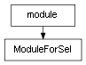

class cymel.core.cyobjects.cyobject.ModuleForSel¶

- class cymel.core.cyobjects.cyobject.ModuleForSel(name)¶
Bases:
ModuleTypeModule class that adds properties to reflect the current selection.
Specify and replace an existing module name.
Methods:
__init__(name)Specify and replace an existing module name.
selected([sel])Get a
CyObjectlist from the selection.selobj([i])Get the currently selected ith
CyObject.Attributes:
- sel¶
Property to get the first
CyObjectthat is currently selected.This is almost equivalent to calling
selobjwithout an argument (i=0), but if nothing is selected, it will return None and will not cause an error.- Return type:
CyObjector None
- selection¶
Property to get the list of currently selected
CyObject.Equivalent to calling
selectedwith no arguments.
Method Details:
- __init__(name)¶
Specify and replace an existing module name.
- static selected(sel=None, **kwargs)¶
Get a
CyObjectlist from the selection.- Parameters:
sel – Selection information. If omitted, it will be retrieved from the current selection. If you specify a string or
CyObject, it will be converted into alist. MSelectionList of API2 can also be specified. If you specify a sequence, it will be interpreted as a selection and you will get aCyObjectlist. Strings orCyObjectcan be mixed in the sequence.kwargs – You can also specify options for the ls command.
- Return type: